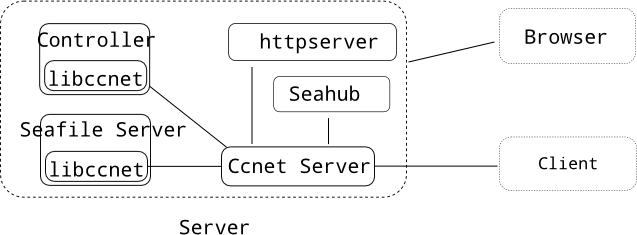
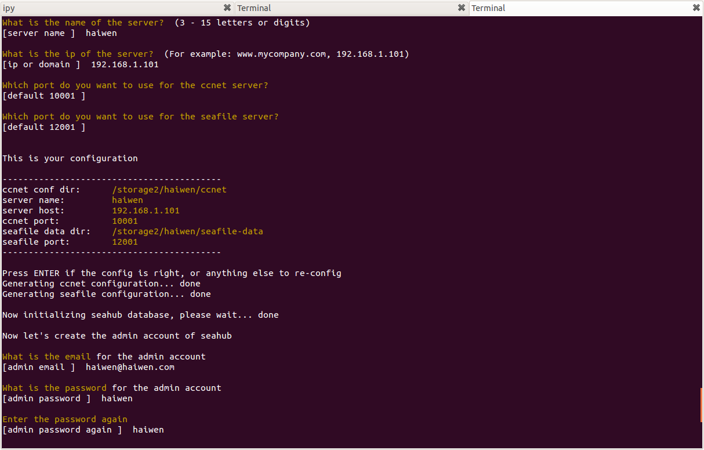
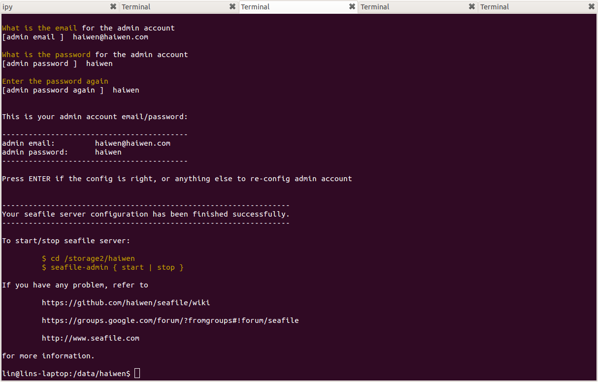

Server¶
Preparation¶
The following list is all the libraries you need to install on your machine. You should install all of them before you build seafile.
Package names are according to Ubuntu 12.04. For other Linux distros, please find their corresponding names yourself.
- libevent-dev (2.0 or later )
- libcurl4-openssl-dev (1.0.0 or later)
- libglib2.0-dev (2.28 or later)
- uuid-dev
- intltool (0.40 or later)
- libsqlite3-dev (3.8 or later)
- libmysqlclient-dev (5.5 or later)
- libarchive-dev
- libtool
- libjansson-dev
- valac
- libfuse-dev
Also, python 2.7 is required since seafile server 5.1.0.
The following libraries need to be compiled from source.
Notes about MySQL client library¶
You can also use MariaDB's LGPL Connector/C library. Download the latest stable version of the library on https://downloads.mariadb.org/connector-c/ then compile and install the library.
cmake .
make
sudo make install
By default the library will be installed under /usr/local/lib/mariadb. Add this path to your LD_LIBRARY_PATH environment variable so the loader can find this library.
export LD_LIBRARY_PATH=$LD_LIBRARY_PATH:/usr/local/lib/mariadb
libevhtp¶
- Download libevhtp.
- Build libevhtp by:
cmake -DEVHTP_DISABLE_SSL=ON -DEVHTP_BUILD_SHARED=OFF .
make
sudo make install
Seahub dependencies¶
Seahub is the web front end of Seafile. It's written in the django framework. Seahub requires Python 2.6(or 2.7) installed on your server, and it needs the following python libraries:
- Django 1.8
- pytz
- django-statici18n
- djangorestframework
- django_compressor
- django-post_office
- django-constance (install it by
pip install https://github.com/haiwen/django-constance/archive/bde7f7c.zip) - gunicorn
- flup
- chardet
- python-dateutil
- six
- openpyxl
Before continue, make sure you have all the above libraries available in your system.
Prepare the directory layout¶
In the following sections, you'll be guided to build and setup the seafile server step by step. Seafile server is consisted of several components. In order for them to function correctly, you must:
- Follow our instructions step by step
- Make sure your directory layout is exactly the same with the guide in each step.
First create the top level directory. In the following sections, we'll use "/data/haiwen" as the top level directory.
mkdir /data/haiwen/
cd /data/haiwen/
mkdir seafile-server
cd seafile-server
The currently layout is:
haiwen/
└── seafile-server
Get the source¶
First you should get the latest source of libsearpc/ccnet-server/seafile-server/seahub
Download the source tarball of the latest tag from
- https://github.com/haiwen/libsearpc/tags
- https://github.com/haiwen/ccnet-server/tags
- https://github.com/haiwen/seafile-server/tags
- https://github.com/haiwen/seahub/tags
For example, if the latest released seafile server is 6.0.1, then just use the v6.0.1-server tags of the projects (except for libsearpc, which uses the v3.0-latest tag). You should get four tarballs:
- libsearpc-3.0-latest.tar.gz
- ccnet-server-6.0.1-server.tar.gz
- seafile-server-6.0.1-server.tar.gz
- seahub-6.0.1-server.tar.gz
Create a folder haiwen/src, and uncompress libsearpc/ccnet/seafile source to it.
cd haiwen/seafile-server
mkdir src
cd src
tar xf /path/to/libsearpc-3.0-latest.tar.gz
tar xf /path/to/ccnet-server-6.0.1-server.tar.gz
tar xf /path/to/seafile-server-6.0.1-server.tar.gz
And uncompress seahub tarball to haiwen/seafile-server:
cd haiwen/seafile-server
tar xf /path/to/seahub-6.0.1-server.tar.gz
mv seahub-6.0.1-server seahub
So far, The current directory layout is:
haiwen/
└── seafile-server
└── seahub
└── src
├── libsearpc-6.0.1-server
├── ccnet-server-6.0.1-server
├── seafile-server-6.0.1-server
├── ... (other files)
Building¶
To build seafile server, you need first build libsearpc and ccnet-server.
libsearpc
cd libsearpc-${version}
./autogen.sh
./configure
make
make install
ccnet-server
cd ccnet-server-${version}
./autogen.sh
./configure # `export PKG_CONFIG_PATH=/usr/local/lib/pkgconfig` if libsearpc is not found
make
make install
By default, configure tries to find MySQL and Postgresql client libraries in the system. If you do not want to support MySQL or Postgresql, use the following configure options:
./configure --without-mysql --without-postgresql
If you want to use MariaDB Connector/C library, use the following configure option:
./configure --with-mysql=/usr/local/bin/mariadb_config
seafile-server
cd seafile-${version}
./autogen.sh
./configure
make
make install
You can use the same options as ccnet-server to configure MySQL and Postgresql client libraries.
Note: You need to run sudo ldconfig to refresh the system libraries cache after you compiles all the components.
Deploy Seafile Server¶
Components of the Seafile Server¶
The seafile server consists of the following components:

- ccnet stores its configuration and metadata is a directory named
ccnet. - seaf-server store its configuration and data in a directory, normally named
seafile-data. - seahub is written in Django. If you have any experience with Django, you should know the
syncdbcommand must be run to create all the database tables. - An admin account has to be created, so that you, the admin, can login with this account to manage the server.
These are the essential steps to create the configuration:
- ensure seafile is already installed and all the python libraries seahub needs are installed.
- create the ccnet configuration with the ccnet-init program
- create the seafile configuration with seaf-server-init program
- run Django syncdb command for seahub
- create an admin account for the seafile server
To create the configurations, you can either:
- use the seafile-admin script(see below)
- [[create server configuration by hand]]
Create Configurations with the seafile-admin script¶
seafile-admin should have been installed to system path after you have built and installed Seafile from source.
usage: seafile-admin [-h] {setup,start,stop,reset-admin} ...
optional arguments:
-h, --help show this help message and exit
subcommands:
{setup,start,stop,reset-admin}
setup setup the seafile server
start start the seafile server
stop stop the seafile server
reset-admin reset seafile admin account
Go to the top level directory(in this guide it's /data/haiwen/), and run seafile-admin setup to create all the configuration:
cd /data/haiwen
export PYTHONPATH=/data/haiwen/seafile-server/seahub/thirdpart
seafile-admin setup
The script would ask you a series of questions, and create all the configuration for you.
This is a screenshot of the seafile-admin setup command: 
And a screenshot after setup is finished successfully: 
At this time, the directory layout would be like this:
haiwen/
└── ccnet # ccnet config directory
└── ccnet.conf # ccnet config file
└── seafile-data # seafile configuration and data
└── seafile.conf # seafile config file
└── seahub-data/ # seahub data
└── seahub.db # seahub sqlite3 database
└── seahub_settings.py # custom settings for seahub
└── seafile-server
└── seahub/
└── seafile-{VERSION} # seafile source code
Start the Seafile Server¶
After configuration successfully created, run seafile-admin start in the top directory to start the all components of Seafile. ( You should always run the seafile-admin script in the top directory ).
cd /data/haiwen # go to the top level directory
seafile-admin start
At this moment, all the components should be running and seahub can be visited at http://yourserver-ip-or-domain:8000
Note You may want to deploy seahub with nginx or apache. In this case, follow the instructions on Deploy Seafile Web With Nginx/Apache.
Stop the Seafile Server¶
To stop seafile server, run seafile-admin stop.
cd /data/haiwen # go to the top level directory
seafile-admin stop
Upgrade the Seafile Server¶
When you want to upgrade to a new vesrion of seafile server, you need to:
- Stop the seafile server if it's running
cd /data/haiwen
seafile-admin stop
- Get and latest source code and build libsearpc/ccnet/seafile, just as what you do in a fresh setup.
- Run the upgrade script. The upgrade script mainly updates database used by seafile for you. For example, create a new database table that is used in the latest seafile server but not in the previous version.
Get and compile the latest libsearpc/ccnet/seafile¶
See the Building section above.
Get the new seahub tarball and uncompress it¶
cd haiwen/seafile-server
mv seahub/ seahub-old # move away the old seahub folder
tar xf /path/to/new/seahub-x.x.x-server.tar.gz
mv seahub-x.x.x-server seahub
Do the upgrade¶
- copy the scripts/upgrade/ subdir outside
The upgrade scripts is distributed in the scripts/upgrade subdir of seafile source code, we need to copy it to seafile-server directory before run the scripts.
cd /data/haiwen/seafile-server
cp -rf seafile-{version}/scripts/upgrade .
Continuous Upgrade (like from 1.1 to 1.2)¶
Continuous upgrade means to upgrade from one version of seafile server to the next version. For example, upgrading from 1.1.0 to 1.2.0 is a continuous upgrade.
Note: Minor upgrade, like upgrade from 1.3.0 to 1.3.1, is documented in a separate section below.
Say you are upgrading from 1.1.0 to 1.2.0, you should run the script upgrade_1.1_1.2.sh in seafile-server directory.
cd /data/haiwen/seafile-server
./upgrade/upgrade_1.1_1.2.sh
Non-continous version upgrade(like from 1.1 to 1.3)¶
If you upgrade a few versions at once, e.g. from 1.1.0 to 1.3.0. The procedure is:
- upgrade from 1.1.0 to 1.2.0
- upgrade from 1.2.0 to 1.3.0
Just run the upgrade scripts in sequence.
Minor Upgrade (like from 1.3.0 to 1.3.1)¶
Minor upgrade Minor upgrade is like an upgrade from 1.3.0 to 1.3.1. For this type of upgrade, you only need to update the avatar link:
cd /data/haiwen/seafile-server/seahub/media
cp -rf avatars/* ../../../seahub-data/avatars/
rm -rf avatars
ln -s ../../../seahub-data/avatars
Problems Report¶
If you encounter any problem when building/deploying Seafile, please leave us a message or open an issue.